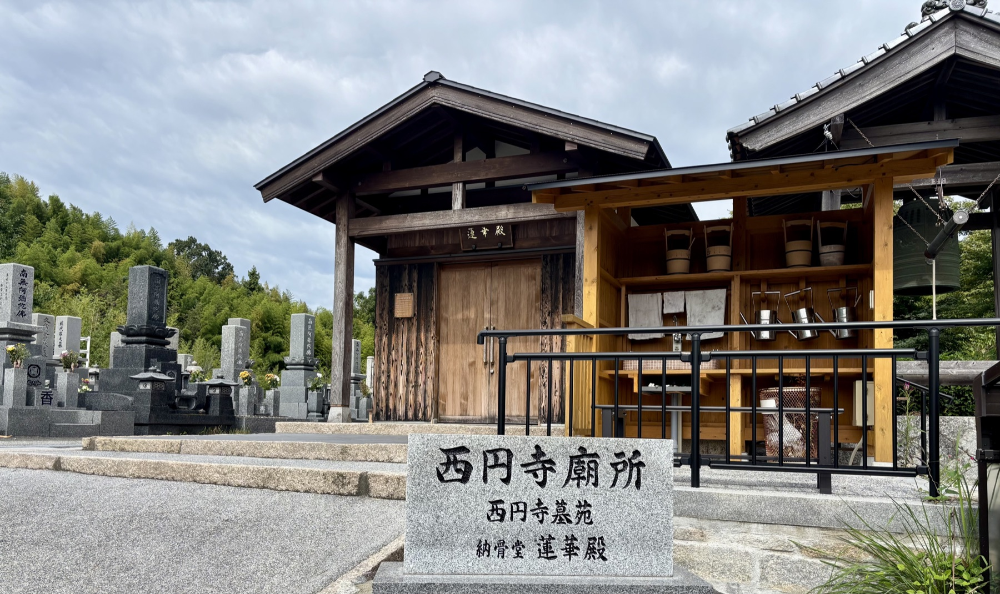
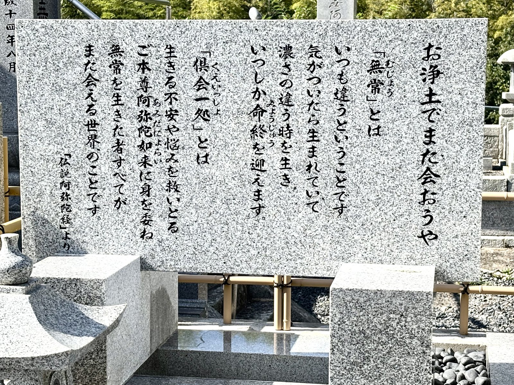
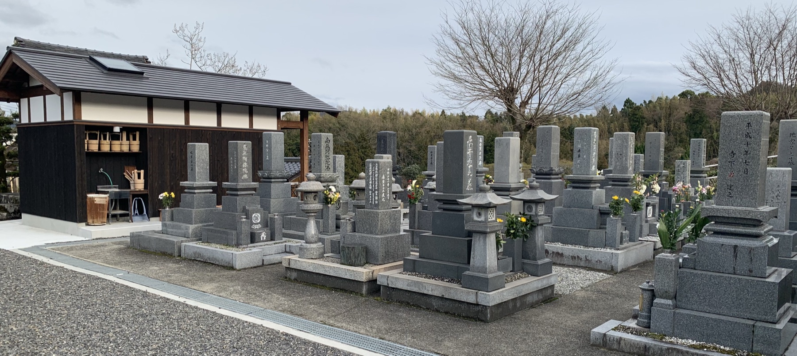
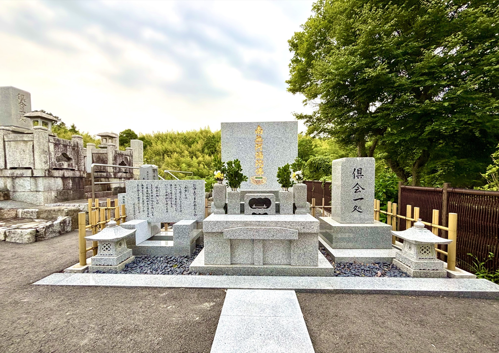
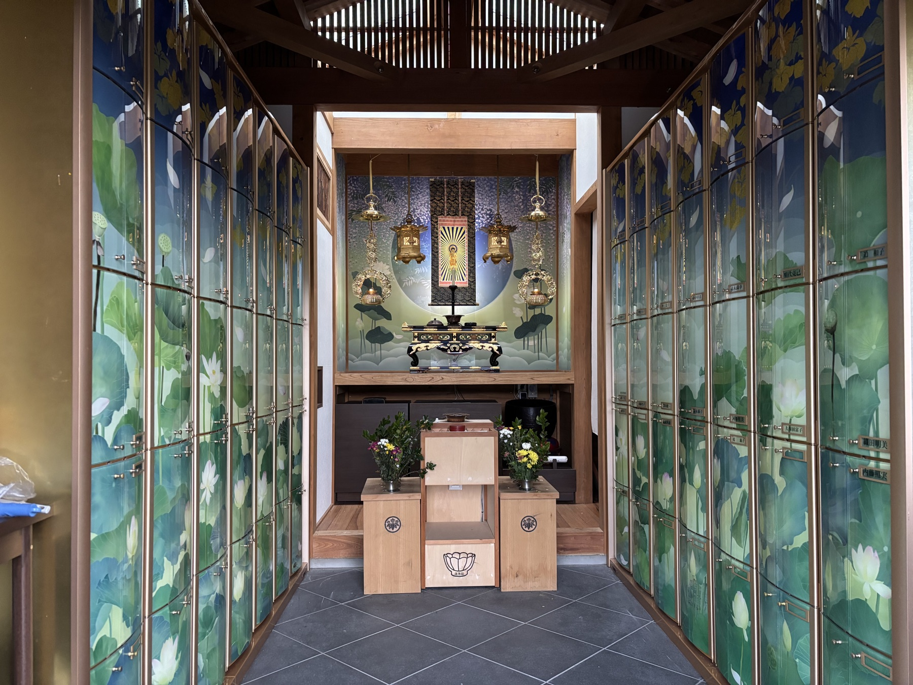
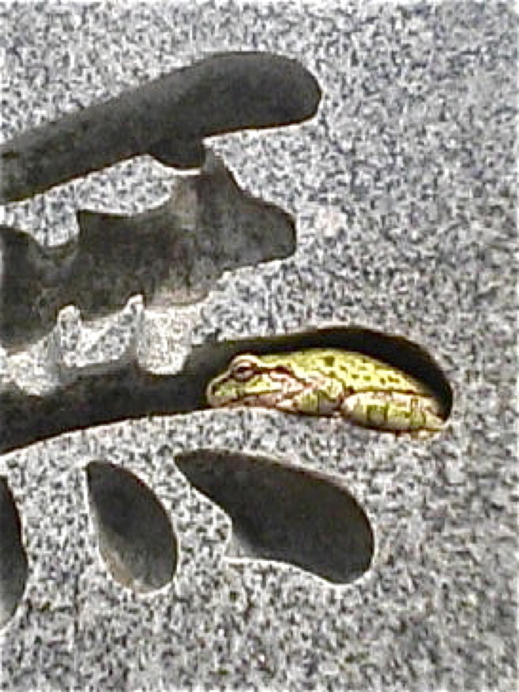

浄土真宗本願寺派
慈化山西円寺
これまでも これからも あなたとともにいつまでも
田舎の静かな時間の流れと共にある
浄土真宗本願寺派のお寺です
浄土真宗本願寺派のお寺です
西円寺廟所のご使用に関するご案内です。

次のようなことでお悩みではありませんか。
今までのお墓を引き継ぐ人がいない
お墓を建てるか迷っている
遠方に住んでいる
お墓を整理（墓じまい・改葬）したい
納骨堂を探している
合同墓について知りたい
移転納骨・承継について相談したい
上記に限らず、ご不明な点は何でもお気軽にご相談ください。

西円寺には、ご事情やご希望に合わせて選べる3つのお墓のかたちがあります。
①家単位のお墓（西円寺墓苑）
②みんなのお墓（合同墓）
③室内のお墓（納骨堂「蓮華殿」）
西円寺廟所（びょうしょ＝寺院にあるお墓のこと）へは、通常は駐車場から徒歩でお参りいただきますが、境内に車で進入し、本堂横や墓所近く（最大3台）まで横付けすることも可能です。廟所内には休憩用ベンチや車椅子対応のスロープを設けておりますので、どなたでも安心してお参りいただけます。
「お墓」と「納骨堂」の違いは、例えるなら「一戸建て」と「マンション（アパート）」のようなイメージです。納骨堂は室内施設のため、雨の日や日差しの強い日でも快適にお参りいただけます。将来引っ越しのご予定がある方、お墓を継ぐ方がいらっしゃらない方、将来的に合同墓へ移転納骨をご検討の方には、改葬がしやすい室内のお墓（納骨堂）をおすすめしております。
| 西円寺墓苑 | 合同墓 | 納骨堂「蓮華殿」 | |
|---|---|---|---|
| 形態 | 屋外（個別建立） | 屋外（みんなのお墓） | 室内（ロッカー式） |
| 特徴 | 駐車場から段差なしに参拝できる | 駐車場から近くベンチあり／花とお香が絶えない墓所 | 堂内は花とお香が絶えない／雨や日差しを気にせず参拝できる／駐車場からスロープ有 |
| 設置基数 | 44基 | 1基 | 70基 |
| 交付基数 | 残15基 | どなたでも使用できます | 残30基 |
| 使用冥加金 | 30万円以上 （初めてのご縁の方は別途永代経懇志5万円以上） |
1体につき10万円以上 （初めてのご縁の方は別途永代経懇志5万円以上） |
50万円以上 （初めてのご縁の方は別途永代経懇志5万円以上） |
| 年間費用 | 合計年間7,000円 （護持会費5,000円／年次冥加金2,000円） |
決まりありません （ご懇志や永代経懇志はありがたくお受けします） |
合計年間8,000円 （護持会費5,000円／年次冥加金3,000円） |
| 承継 | 必要 （承継できない時は12年後を目安に合同墓へ移転納骨） |
不要 （西円寺が永くお護りいたします） |
必要 （承継できない時は12年後を目安に合同墓へ移転納骨） |
| こんな方におすすめ | 代々のお墓をしっかり残したい方 | 後継者がいない方／費用を抑えたい方 | 天候を気にせずお参りしたい方／将来移転の可能性がある方 |

西円寺墓苑は、大正時代から続く墓地に加え、1989（平成元）年に県知事より経営許可を受け、2024（令和6）年秋には水汲場も整備しております。
※墓地のご使用、名義の承継、納骨をご希望の方は、申込書類をご請求ください。
（墓地経営許可番号：指令生活衛生第163号の3の15）

お墓は亡き人を偲び、思い出を語り合う大切な場所です。西円寺の合同墓は、多くの方がお参りに訪れ、常にきれいなお花とお香が絶えない「みんなのお墓」です。2005（平成17）年に前住職が建立し、2022（令和4）年秋に現在の場所へ移設・整備いたしました。2024（令和6）年秋には水汲場も整備しております。
正面に刻まれた「倶会一処（くえいっしょ）」という言葉は、『仏説阿弥陀経』にある「阿弥陀さまのもとで再び会いましょう」という意味です。いつかまた会えるその日まで、心を落ち着かせて静かに手を合わせられるやすらぎの場所となっております。お盆やお彼岸には定期的に法要もお勤めいたします。
通常の個人墓は連絡が取れなくなると無縁墓となってしまいますが、合同墓は西円寺が続く限りご門徒みんなで永く護ってまいります。

「蓮華殿（れんげでん）」は、西円寺が維持・管理する室内納骨堂です。正面のお仏壇には白い蓮と藤の花が描かれ、左右に並ぶ納骨壇（各35基・計70基）にも美しいオリジナルの蓮や菖蒲の花が施されています。お盆やお彼岸には法要もお勤めいたします。納骨堂は県知事から2020（令和2）年1月17日に70基の経営許可を受け、2024（令和6）年秋に水汲場を整備しました。
納骨壇には前室が付いており、内扉との間に過去帳や生前大切にされていたご本尊を安置することができます（※鍵は西円寺にて安全に保管いたします）。
※資料請求やご見学、お申し込みはお気軽にお問い合わせください。
（納骨堂経営許可番号：指令平31生活衛生第1012号）
屋外のお墓へのお参りは、山門をくぐった後（お車でお越しの方は下車後）、まず本堂のご本尊にご挨拶（お礼）をしてから墓所へ向かうのが通例です。お墓の掃除を行い、お花・お供物・お灯明（ろうそく）・お香をお供えしてお参りします。室内の納骨堂（蓮華殿）も同様の作法でお参りいただけます。
墓地・納骨堂ともにお使いいただける区画がございます。見学や詳しい説明をご希望の方は、どうぞお気軽に寺務所までお問い合わせください。
